Download
DownloadFBX Bundle
FBX Bundle addon batch exports your object selection into file bundles by a common identifier. It is easy to use and requires just a single click to export or update game assets to your game engine.
Optional modifiers allow to automate game engine optimisations such as LOD generation, mesh optimisations or creation of collider meshes.
Features
- Select objects and batch export in one click
- Bundle objects into files with local pivots
- Profiles for Unity, Unreal, glTF and Collada
- Powerful export Modifiers: Rename, Offset transform, copy modifiers, merge meshes, collider meshe, LOD, vertex AO
- Unity: Auto assign materials & fix rotation issues
- Draw fences around bundles of objects
Download
The GIT sourcecode is hosted at bitbucket. You can find a release log here.
Installation
FBX Bundle addon requires Blender 2.79 (2.8 is not yet supported)
Installation
- Open User Preferences in Blender and select the Add-ons tab
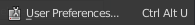 - Press Install Addon and Select the zip file
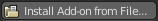 - Enable the FBX Bundle Addon
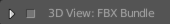
The FBX Bundle addon can be found the viewport tool panel.
Shortcuts
This addon adds the following shortcuts active in the 3D view
- Ctrl + E: Export selected objects/ bundles
- Ctrl + Shift + E: Re-Export last exported bundles (does not require any selection)
 Optional Unity Script
Optional Unity Script
This optional Unity Editor script does the following:
- Disable mesh scale import settings, e.g. scale the mesh in unity at 1.0 instead of 0.01
- Disable Unity material generation
- Automatically assigns existing materials inside the fbx prefab. The Unity Editor script can automatically assign existing materials if the material names between Blender and the Unity project match.
- Assigns collider meshes when it finds meshes named _COLLIDER e.g. via using the Collider Mesh modifier.
You can install the script from within the FBX Bundle addon preferences to your Unity Project
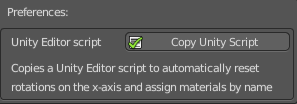
It wil create an Editor folder with the c# Editor script inside. Alternatively the C# script can also be found in the addon zip file under "FBXBundleExporter/resources/PostprocessorMeshes.cs"
Quick Guide
Below is a common usage example
- Select your export platform e.g. Unity, Unreal,..
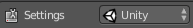 - Select a path for your export location
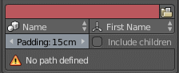 - Set the bundle by mode to Parent and set the pivot at mode to Parent
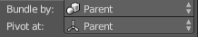 - Enable Inlcude children to automatically include objects part of the parent object.
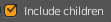 - Choose a main object and parent other objects to it
- Select your objects
- Press Export
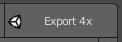
Unity Tips
Adding Unity Editor script
Under the addon preferences for FBX bundle press 'Copy Unity Editor script’ and select your Unity Assets folder.
Automatically assign Materials
Create a material in Blender and assign it to your object(s). Create a material in Unity with the same name as the material in blender. Each time unity re-imports your fbx assets materials will be assigned.
Use the Merge Mesh Modifier
Use the Merge Meshes modifier to combine all the meshes of each bundle into 1. This can reduce the draw calls at runtime and reduce the amount of objects to select and manage inside Unity.
Settings
All settings are stored per blender scene and allow therefore per scene unique configurations.
Platform
Choose different platforms to export for.
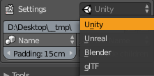
Unity
Uses the FBX format and applies the correct metric scale and fixes the y /z roation issues. An optional Unity editor script allows to automatically assign materials and collider meshes.
Unreal
Uses the FBX format and applies the correct metric scale and FBX export settings.
Blender
Uses collada files (DAE) to export.
glTF
Uses the new glTF file format to export. This requires the glTF addon to be installed. glTF is a promosing format to compete with FBX
Path
Defines the export or import target path. When a path is not defined a red warning color will show and you can not export or import bundles.
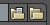
Press the outside folder button to open the folder location.
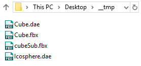
Bundle by
Defines the rule as to how to group your object selection into different file bundles. The following modes are available:
Name
Bundles objects by a common object name element. The name is split into elements seperated by spaces, ‘.’, ‘_’ or cameCase writing.
Parent
Bundles objects together that share the same parent object. The name of the parent object is used for each file name.
Group
Objects with the same group name are bundled together. The name of the group is used for each file name.
Material
Objects with the same material are bundled together. The name of the material is used for each file name.
Scene
Objects from the same scene are bundled together. The name of the scene is used for each file name.
Pivot at
Defines the source of the scene pivot upon exporting. The following modes are available:
First name
Uses the pivot of the object that appears alphabetically first in the bundle.
Lowest object
Uses the pivot of the lowest object in the bundle.
Bottom center
Uses bottom center of the bundle bounds.
Scene 0,0,0
Uses the center center location (0,0,0) as the pivot.
Parent
Uses the pivot of the most parent object of the bundle.
Empty Gizmo
Use the location of the first empty object in the selection. The empty object must be of type Arrows, Single Arrow or Plain Axis
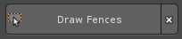
Use the Draw Fences tool to preview the pivot placement of each bundle.
Padding
This padding value is used for various tools but most notable for the ‘Draw Fences’ feature where it defines a padding used to draw around the bundles.
Include children
When enabled will automatically include children of parented objects, all objects of a group or objects of a scene if either bundle mode is active.
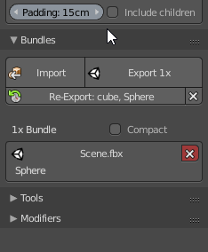
This means that it often is enough to select just a single object of a bundle instead of all to bundle them for export.
Modifiers
Modifiers are applied in the export process on a copy of your actual objects. They are used to automate common repetitive tasks that are often associated with preparing assets.
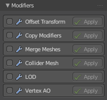
Modifiers are executed from top to bottom order.
Apply Button
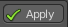
Press the Apply button to apply individual modifiers to your selection during editing in Blender. This is a great way to preview the settings of individual modifiers.
Rename
Allows to rename the target path or bundle file name. These fields support dynamic variables, dynamic variables are written inside curly brackets { } .
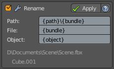
The following variables are available:
- {path} the original output path
- {bundle} the bundle name of each file
- {scene} the current scene name
- {object} the object name
Previews of the final path and file name are previewed at the bottom of the rename modifier UI.
Path Rename
Template field for renaming the path of each bundle.
File Rename
Template field for renaming the file name excluding the file extension.
Object Rename
Template field for renaming the object name
Offset Transform
Copies the transform offset (move, rotate, scale) of a source object to each item in the bundle.
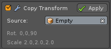
Source Object
The source object in your blend file from which to copy the transform.
Copy Modifiers
Copies blender modifiers from a source object to all exported objects. For example your source object could contain a triangulate or edge split modifier which would be applied on each object upon export.
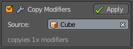
Source Object
The source object in your blend file from which to copy the modifiers.
Merge Meshes
Merges all meshes of a bundle into a single mesh and object. This modifier is ideal for static environment assets.
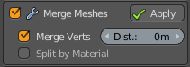
Merge Verts
Merges vertices within a specified distance. This is identical to removing double vertices in mesh editing.
Split by Material
Splits the mesh by material so that each mesh contains only 1 material.
Collider Mesh
Creates an additional collider mesh for each object in a bundle with a simplified geometry.
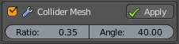
Ratio
The quality ratio of the collider mesh, a value of 0.25 means that the collider mesh will aim for a 25% vertex count to the original object.
Angle
The flattening angle (degrees) of face normals to further compress the collider geometry. The bigger the angle the more blocky the collider.
LOD
Also known as level of detail which is a technique used in game engines to optimize performance. This modifier creates a series of copies of each object in your bundle with a reduced triangle count for each LOD step and a name indicating the LOD level.
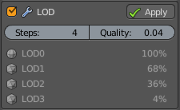
LOD levels are previewed in the modifier panel with the compression ratio and LOD level.
Steps
How many LOD steps to include.
Quality
The lowest LOD compression ratio. A value of 0.05 means that LOD steps will range from 100% down to 5% geometry level.
Vertex AO
This modifier applies vertex color based ambient occlusion to each mesh of a bundle. This is a great way of adding AO depth without the limitation of texture resolution, file or memory size of textures.
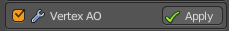
Vertex colors require shaders to fully utilize them.
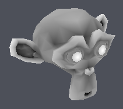
Tools
Draw Fences
Draw grease pencil fences around the current selected bundles in your scene. A pole with a flag indicates the pivot for each bundle under the current pivot mode.
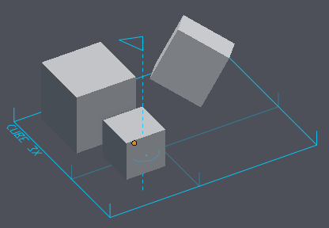
Press the 'X' to clear the created grease pencil lines.
Ground Pivot
Sets the pivot points of selected objects to the ground of the bounding box of the bundle.
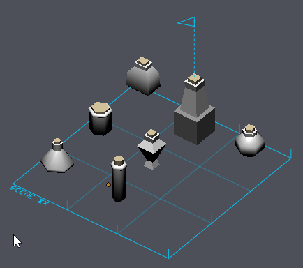
Bundles
This panel lists in realtime the current evaluated bundles of your scene selection. As you change your selection in Blender this list will adjust and show you the file names that will be exported.
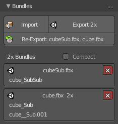
Compact View
Enables or disables compact bundle list view.
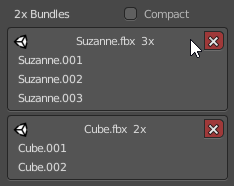
Import
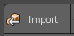
Batch imports all 3D files from the specified path into the scene. Imported objects are placed at their default import location.
The following file types are supported: fbx, 3ds, obj
Export
Batch exports your selected bundles to the specified path. Upon each bundle export your objects are copied so your original objects are notaltered. Active modifiers are applied and finally the original object selection restored.
Re-Export
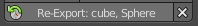
Once you exported a model before FBX Bundle will remember the previous bundles you exported. Pressing the re-export button will export the very same objects from last time so you don’t have to manually select your objects to export.
Press the X to clear the previous bundle selection.